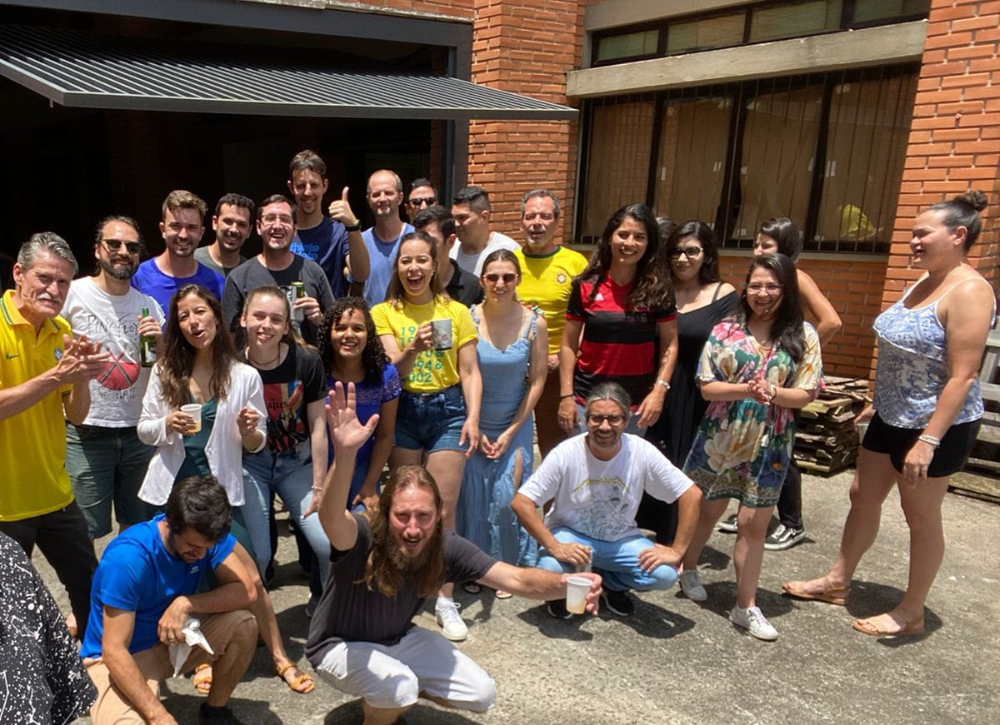
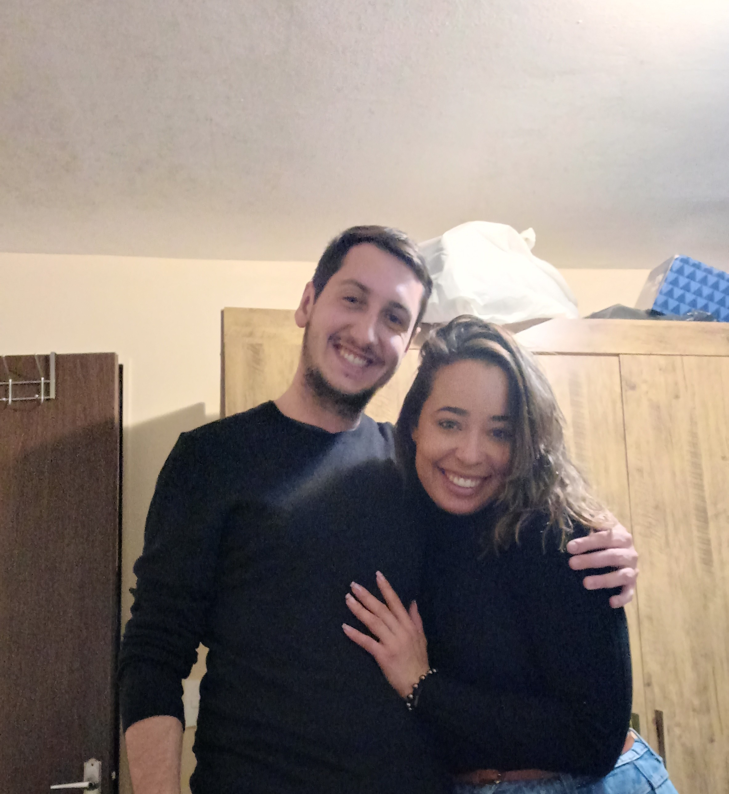
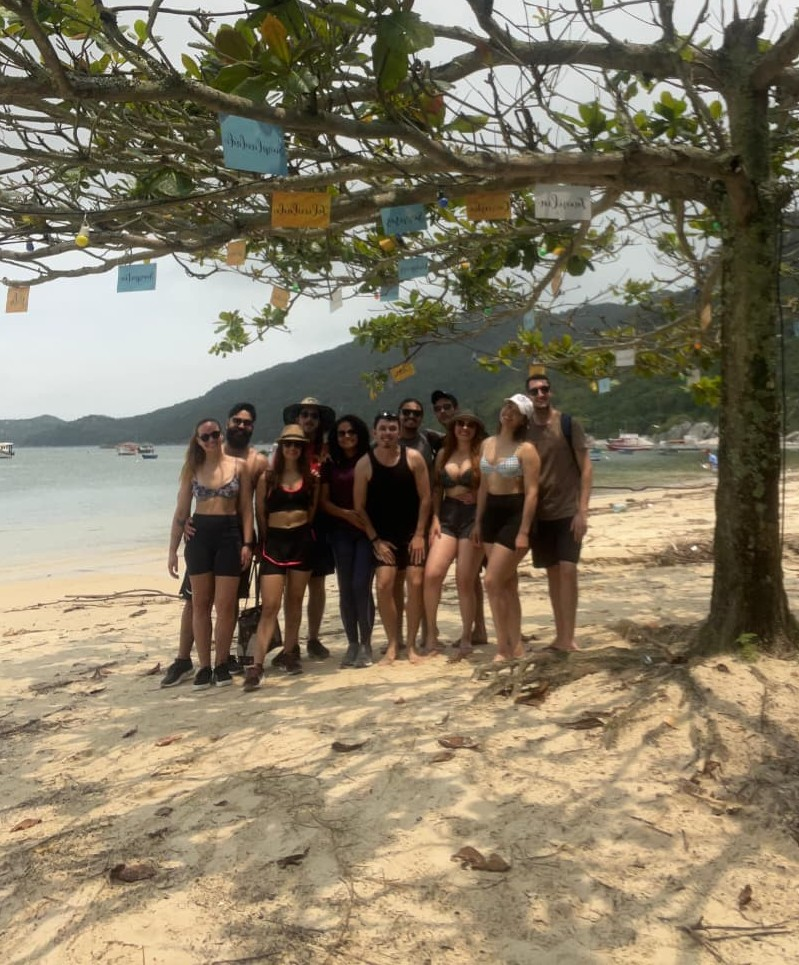
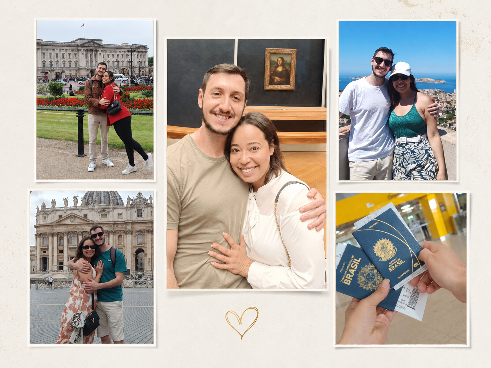
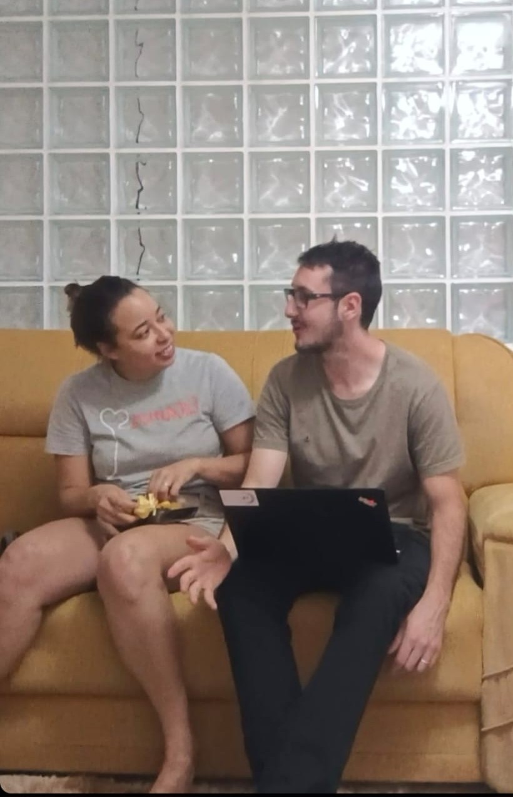
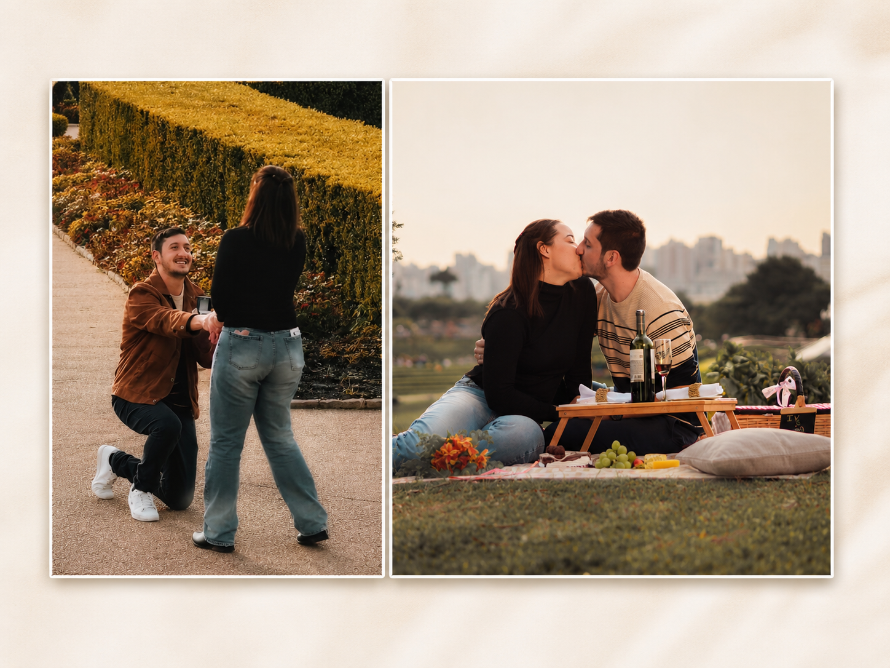

Análise de coesão de longo prazo e sinergia matrimonial: dois vizinhos que escolheram caminhar juntos
Ivana e Gabriel moraram durante quase três anos no mesmo prédio e fizeram doutorado no mesmo programa de pós-graduação, mas eram apenas “aquela menina da pós” e “aquele menino da pós”. A aproximação começou quando Gabriel se tornou vizinho de porta de Ivana e as conversas ocasionais passaram a fazer parte da rotina. A amizade mudou de direção, os acordos de que seria “apenas uma ficada” e de que ninguém descobriria falharam rapidamente, e o relacionamento foi oficializado em setembro de 2023. Entre viagens, diferenças de personalidade, domingos de Globo Rural e um pedido de casamento no Jardim Botânico, eles perceberam que suas habilidades se completam e que funcionam melhor como um time.
Palavras-chave: amor; parceria; viagens; vizinhos; casamento.
1. Introdução
Ivana e Gabriel moravam no Residencial Olinda, em Curitiba, e frequentavam o mesmo programa de pós-graduação. Durante quase três anos, encontravam-se algumas vezes na universidade, trocavam cumprimentos e seguiam suas rotinas.
Para Gabriel, Ivana era “aquela menina da pós”. Ele a achava um pouco metida porque ela não participava dos rolês do grupo. Para Ivana, Gabriel era “aquele menino da pós”: tão inteligente que ela imaginava que ele jamais conversaria com ela.
Os dois estavam enganados.
Tudo começou a mudar quando Gabriel trocou de apartamento e passou a morar ao lado de Ivana. Depois de anos no mesmo prédio, foi preciso que se tornassem vizinhos de porta para que finalmente começassem a se conhecer.
Figura 1 — Onde tudo começou

Copa de 2022: Primeiras interações.
2. Os protagonistas
| Participante | Características principais | Contribuição para a dupla |
|---|---|---|
| Ivana | Extrovertida, solar, criativa e comunicativa | Conversa, organiza e faz as coisas acontecerem |
| Gabriel | Tímido, calado, inteligente e observador | Analisa, encontra soluções e conserta praticamente tudo |
Ivana é desenrolada. Gabriel é lógico. As personalidades são diferentes, mas as habilidades funcionam melhor quando estão reunidas.
3. Da vizinhança ao namoro
A primeira conversa de verdade aconteceu depois que Gabriel se tornou vizinho de Ivana. Eles falaram sobre o doutorado e sobre um prêmio que ela havia recebido. Não trocaram contato naquele momento: durante meses, continuaram se conhecendo pessoalmente nos encontros pela universidade.
Uma pequena demonstração de sintonia aconteceu durante as compras para uma viagem com amigos. Ao serem questionados sobre qual molho de tomate preferiam, responderam juntos: “o mais barato”. A lembrança não possui registro fotográfico, mas permanece guardada pelos envolvidos.
Com o tempo, as conversas ficaram mais frequentes, a amizade ganhou outro sentido e aconteceu o primeiro beijo. Os detalhes permanecem sob sigilo dos autores.
Depois disso, eles praticamente não se desgrudaram, embora tenham decidido que seria apenas uma ficada.
Uma semana mais tarde, Gabriel convidou Ivana para jantar em um restaurante árabe. Comeram, tomaram vinho e conversaram sobre a vida. Ivana recorda a gentileza dele durante toda a noite. Gabriel lembra do constrangimento por não entender de vinhos e do alívio ao perceber que ela tratava tudo com leveza.
Naquela noite, fizeram dois acordos: manteriam o envolvimento em segredo e não formariam um casal. Ambos falharam.
Como eram vizinhos e trabalhavam no mesmo prédio, encontravam-se quase todos os dias. O amigo João ajudou na tentativa de esconder o romance, mas a operação tornou-se cada vez menos viável.
Ivana percebeu que estava apaixonada quando passou a sentir saudade e querer estar com Gabriel todos os dias. Gabriel percebeu quando começou a planejar viagens com ela, algo que não costumava fazer. Os dois acreditam que se apaixonaram ao mesmo tempo.
Tabela 1 — Desenvolvimento da relação
| Momento | Resultado |
|---|---|
| Cumprimentos na universidade | Cordialidade entre colegas |
| Vizinhos de porta | Início das conversas |
| Conversas frequentes | Crescimento da amizade |
| Primeiro beijo | Mudança inesperada no roteiro |
| “Será só uma ficada” | Plano rapidamente abandonado |
Figura 2 — Não conseguiram desgrudar

Apartamento no Olinda: Serem vizinhos jogou o acordo por água abaixo.
4. O relacionamento se torna oficial
Em 14 de setembro de 2023, Gabriel levou Ivana ao espetáculo Candlelight — As Quatro Estações, de Vivaldi. Depois da apresentação, fez o pedido oficial de namoro.
Ivana foi a primeira a dizer “eu te amo”.
Em novembro de 2023, durante uma viagem a Bombinhas, eles reuniram os amigos e anunciaram que estavam juntos. O segredo estava oficialmente encerrado.
Figura 3 — Anúncio do namoro

A viagem a Bombinhas marcou o momento em que o romance foi finalmente revelado aos amigos.
5. Viagens e ajustes de percurso
A primeira viagem do casal foi para Ubatuba. Choveu, mas eles conseguiram se divertir, mostrando que uma boa companhia pode salvar até os planos prejudicados pelo tempo.
Depois, realizaram juntos o sonho de viajar pela Europa, passando por Roma, Paris, Marselha e Londres. As diferenças de personalidade causaram alguns atritos no início, mas os dois aprenderam a respeitar o ritmo e as necessidades um do outro. Ao final, estavam perfeitamente alinhados.
| Destino | Lembrança principal |
|---|---|
| Bombinhas | O relacionamento foi apresentado aos amigos |
| Ubatuba | Diversão apesar da chuva |
| Roma, Paris, Marselha e Londres | Um sonho realizado e o casal mais unido |
Figura 4 — Viagem pela Europa

A viagem consolidou o companheirismo e amor entre o casal.
6. A vida cotidiana
Gabriel é mais calado e tímido. Ivana é extrovertida e solar. Eles se consideram como yin e yang: diferentes, mas complementares.
Gostam de cozinhar, dançar na sala, conhecer lugares novos e acordar cedo aos domingos para assistir ao Globo Rural. A música do casal é “Paradise - I’m Taking You” (Reproduza 🎵), de Shy5, porque representa as viagens, o amor e a certeza de que a melhor parte de qualquer destino é a companhia um do outro.
Ivana se sente amada quando é cuidada, protegida e apoiada por Gabriel. Ela admira sua inteligência, tanto na vida acadêmica quanto na capacidade de montar móveis, desentupir canos e resolver os problemas da casa.
Gabriel se sente amado nos gestos simples de Ivana, como um bolo preparado no meio da tarde apenas porque ela sabe que ele gosta. Ele admira sua comunicação, criatividade, perspicácia e capacidade de desenrolar qualquer situação.
Quando precisam resolver algo juntos, as diferenças tornam-se vantagens. Cada um contribui com suas próprias habilidades, tornando as tarefas mais fáceis e confirmando que os dois funcionam melhor como uma equipe.
Figura 5 — A felicidade na rotina

Choque de cultura: No cotidiano do casal, as diferenças culturais fazem parte da rotina.
7. Do apartamento compartilhado ao noivado
Quando passaram a morar juntos, começaram a conversar seriamente sobre casamento. Afinal, decidiram que Ivana não seria apenas “amigada” de Gabriel.
Os planos estavam alinhados, inclusive no tempo em que desejavam realizá-los. Eles sonham em construir um lar, formar uma família com dois filhos e um cachorro, continuar viajando e fazer da felicidade e da harmonia parte da rotina.
O pedido de casamento aconteceu durante um piquenique no Jardim Botânico de Curitiba, organizado por Gabriel com a ajuda dos padrinhos Theo e Augusto. O local representa a cidade onde os caminhos dos dois se encontraram e onde o amor começou.
Para Ivana, esse foi o momento mais feliz da história do casal. Gabriel, além da emoção, estava preocupado com a possibilidade de ela ficar brava porque não estava com as unhas feitas.
Ela não ficou.
Figura 6 — O pedido de casamento

O momento do sim aconteceu no coração do Jardim Botânico de Curitiba.
8. Considerações finais
Ivana define a relação como escolher um ao outro todos os dias. Gabriel a define como um feliz acaso.
O acaso colocou os dois no mesmo programa, no mesmo prédio e, depois, em apartamentos vizinhos. As escolhas diárias transformaram aquela proximidade em amizade, amor, parceria e planos para o futuro.
No dia do casamento, Ivana espera entrar, olhar para Gabriel e pensar:
“Nós conseguimos. Estamos aqui.”
Gabriel sabe que ao ouvir a marcha nupcial perceberá a
Sorte de tê-la ao seu lado
Eles desejam que os convidados percebam o amor colocado em cada detalhe e aproveitem muito a celebração. Acima de tudo, levam para o casamento uma certeza simples: são um time e conseguem enfrentar qualquer coisa, desde que permaneçam juntos.
Agradecimentos
Os autores agradecem aos amigos e familiares que acompanharam a história.
Conflito de interesses
Os autores declaram forte interesse afetivo um pelo outro e intenção de manter a parceria por toda a vida.